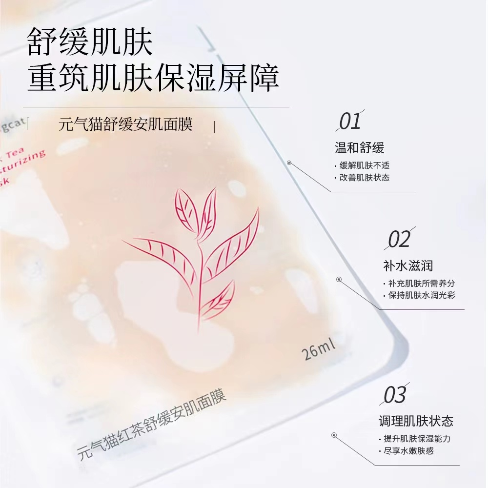

元气猫红茶舒缓安肌面膜产品

产品名称：元气猫红茶舒缓安肌面膜产品
规格：26ml*5
适合肤质：油性至中性混合肤质
产品成分：二裂酵母发酵产物滤液、茶叶粉、麦芽寡 糖葡糖苷、银耳多糖、燕麦β-葡聚糖、积雪草甙、金钗石斛茎提取物、透明质酸钠、库拉索芦荟叶提取物、苦参根提取物、宁夏枸杞果提取物、紫松果菊提取物 使用方法：洁面后，取出面膜，使面膜充分紧贴皮肤， 20分钟后取下面膜，轻按面膜液至吸收。 功效：舒缓肌肤，重筑肌肤保湿屏障
Morningcat元气猫红茶鲜萃安肤面膜
产品名称： Morningcat元气猫红茶鲜萃安肤面膜
产品规格：120g/瓶
功效：补水保湿，养护肌肤，平衡状态
适合肤质：油性至中性混合肤质
产品成分：烟酰胺、海藻糖、二裂酵母发酵产物滤液 、茶叶粉、麦芽寡糖葡糖苷、银耳多糖、泛醇、肌肽、马齿苋提取物 使用方法 ： 洁面后，取适量本品涂抹于脸部，15分钟后用清水冲洗干净即可。每周2-3次。